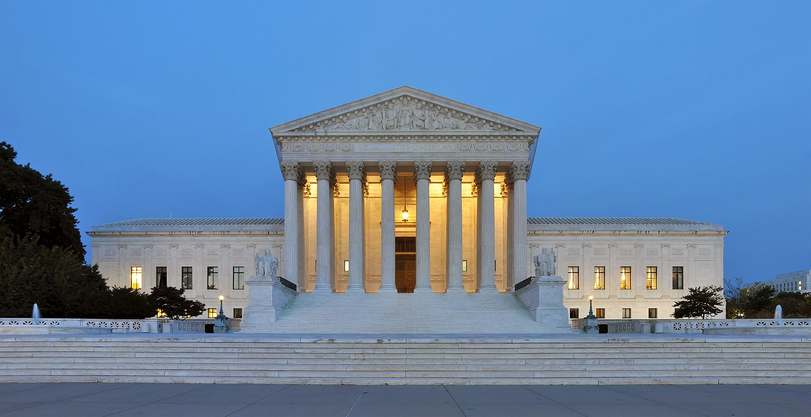

Vol. I · No. 145 · Tuesday, October 20, 2026 · 13 items · 9.2 min read
Four justices step aside and a songwriter keeps the world, Canada’s newsrooms take Anthropic to court, and Kyiv runs short of Patriots as Witkoff lands in Oslo.
Law · Washington
Four recusals leave the Supreme Court without a quorum, so a songwriter’s worldwide termination win stands, and the justices take up the home-still ban

The Supreme Court, which could seat only five justices in the Vetter case. Joe Ravi / Wikimedia Commons
The Supreme Court could not muster a quorum on Monday in the music industry’s appeal in BMG Rights Management v. Vetter, No. 25-1391, after Justices Sotomayor, Gorsuch, Barrett and Jackson took no part. Five justices, one short of the six required, affirmed the Fifth Circuit under , a judgment with no precedential force. No reason was given. Music Business Worldwide noted that Bertelsmann owns both BMG and Penguin Random House, which has published books by all four.
“Preventing activity lest it give rise to tax evasion places no limit whatsoever on Congress’s power.”
The Fifth Circuit in McNutt, now under review
The ruling left standing holds that Cyril Vetter’s 2019 termination of his 1963 grant of recaptured the song , not only in the United States. Universal, Sony and Warner’s publishing arms joined BMG after buying the losing defendant’s stake in March so they could petition. The rule now binds federal courts in Louisiana, Mississippi and Texas, and other circuits remain free to disagree.
The same order list granted DOJ v. McNutt, No. 26-204, on an 1868 ban on home distilleries carrying up to five years in prison. The Fifth Circuit held that a ban which raises no revenue exceeds the taxing and necessary and proper powers; the Sixth Circuit upheld it in . The Court also took Association for Education Fairness v. Montgomery County Board of Education, limited to how a plaintiff proves disparate impact against a facially neutral . Both will be argued early next year.
AI · Toronto
Canada’s largest newspapers and its national wire sue Anthropic in Ontario over training Claude
Six of Canada’s largest news organizations are suing Anthropic and its Canadian subsidiary in Ontario Superior Court, claiming Claude was trained on millions of their articles without permission, The Canadian Press reported Monday. The plaintiffs are Torstar, The Globe and Mail, Metroland, Postmedia, PNI Maritimes and The Canadian Press itself. The claim was filed Oct. 6 and reached mainstream coverage this week.
It pleads copyright infringement, unjust enrichment, breach of website terms, circumvention of such as paywalls, and live scraping when users prompt Claude. It seeks damages “potentially” in the billions or, alternatively, per work, plus disgorgement, punitive damages and an injunction. The Canadian Press counts about 4.2 million of its works. Anthropic had not commented and, as a foreign defendant, has up to 60 days to file a defence. The publishers’ 2024 suit against is unresolved.
News · Oslo · cross-spectrum LLLC
Witkoff meets Zelenskyy in Oslo as Kyiv says its American Patriot stock is nearly gone
Steve Witkoff meets Volodymyr Zelenskyy in Oslo on Tuesday, with Norway’s Prime Minister Jonas Gahr Støre hosting and Finland’s Alexander Stubb attending, before flying on to , Axios reported. Jared Kushner joins by video. A US official said Trump has ordered “an intensive process to develop a comprehensive peace proposal” with Ukraine and Europe, adding that “substantial work remains.”
Kyiv arrives short of air defense. Zelenskyy told a bipartisan congressional delegation on Monday that “we have almost no left from the United States batch,” said a new package awaits Defense Secretary Pete Hegseth’s approval, and offered to for 30 days in exchange for 30 days of Patriot help. Trump said the same day that “Russia, frankly, has been fine on Ukraine.” Russia’s latest barrage used 16 ballistic and six cruise missiles.
AI
Comps and exclusions
AI · San Francisco
OpenAI hurries a $30 billion raise above $1.4 trillion to land before Anthropic lists
OpenAI is speeding up a raise of about $30 billion at a valuation above $1.4 trillion to close before Anthropic’s planned listing, Reuters reported Monday, citing two sources. SoftBank, and existing backers are in talks. It told investors annualized revenue hit $50 billion, with $70 billion targeted by year end, and it disputes Anthropic’s practice of booking cloud-resale revenue . Some investors want Anthropic priced near $1.5 trillion, not the $2 trillion once discussed.
AI · Washington
Homeland Security orders DeepSeek removed from every federal civilian system
Homeland Security Secretary Markwayne Mullin has ordered DeepSeek products out of federal civilian IT systems, CyberScoop reported Monday. Issued under the , it bars buying any product or service from or its affiliates, and agencies must seek exceptions 60 days ahead with a “compelling justification.” Mullin signed it June 26; it reaches the Federal Register on Tuesday. Outlets disagree on whether tools built on DeepSeek models are covered.
Markets & Deals
Paper, notes and plumbing
Corporate · Milan
Intesa’s board approves the share issue for its €34 billion bid as Siena’s shareholders lock in their votes
Palazzo Salimbeni, Siena, the bank’s headquarters. Ray in Manila / Wikimedia Commons
Intesa Sanpaolo’s board on Monday approved the share issue that funds its offer for , using authority shareholders granted in September. Each of up to about 3.04 billion MPS shares would receive and €1.25 in cash, the cash raised by 25 cents on Oct. 3. Wall Street Italia put the issue at up to 5.7 billion shares, an indicative maximum of about €34.3 billion.
Supervisors have cleared the new shares to count as core capital, Intesa said; an offer document and prospectus must follow before acceptances open. Tuesday is the share-deposit deadline for MPS’s Oct. 29 meeting, where management needs to approve its own exchange offers for Banco BPM and Banca Generali. About 34 percent of the capital is reportedly lined up against them.
Corporate · New York
Kimberly-Clark prices $4.9 billion of Kenvue notes as the 20-year yields more than the 30-year
Kimberly-Clark priced $4.9 billion of senior notes in five tranches on Monday evening to fund the cash part of its , with coupons from 5.10 percent in 2028 to 5.80 percent in 2036 and a at 101 if the deal fails. The ten-year Treasury closed at 5.15 percent, up six basis points, and the 20-year at 5.53 percent sat above the 30-year’s 5.48 before a $13 billion reopening Wednesday. FedWatch puts a hold on Oct. 28 near 83 percent.
Corporate · New York
Tradeweb agrees to buy Trumid for about $1.97 billion
Tradeweb agreed after Monday’s close to buy Trumid, the electronic corporate-bond trading platform, for about $1.97 billion: $1.75 billion for the business and about $220 million for its . It pays about $1.89 billion in cash, mostly on hand, and $82 million in stock, expects the deal to add to adjusted earnings in its first full year, and targets closing in the first half of 2027. Fried Frank and Simpson Thacher advised Tradeweb, and advised Trumid.
Law & the Courts
Antitrust reaches the sandbox
Law · San Francisco
The FTC and 12 states sue to stop a private equity playground roll-up
The Federal Trade Commission and 12 states sued in federal court in San Francisco on Monday to block PlayPower, a portfolio company, from buying rival playground maker BCI Burke. The Commission voted 2-0 to seek a . Five firms hold 85 to 90 percent of the US commercial playground market, the agency says, and the two companies make about 41 percent of Colorado’s sales. Texas, Ohio and Tennessee joined Democratic attorneys general. Terms of the February deal were not disclosed.
The World
War empties the ballroom
News · Riyadh · cross-spectrum LCLR
Saudi Arabia postpones its Davos in the Desert to 2027 after Houthi attacks on Riyadh
The Ritz-Carlton, Riyadh, host of the first summit in 2017. AntheaAtlas / Wikimedia Commons
Saudi Arabia has postponed the 10th , the Riyadh summit known as Davos in the Desert, to 2027 after Houthi , including on King Khalid International Airport, CNBC reported Monday. The conference had been set for Oct. 26 to 29. FII Institute Chief Executive Princess Maha bint Mishari Al Saud said new dates would come “very soon” and registrations remain valid.
Semafor reported that the decision followed lobbying from Wall Street, after The Wall Street Journal reported senior bankers weighing staying away; BlackRock’s Larry Fink and JPMorgan’s Jamie Dimon had been expected. Hybrid and remote formats were considered. Riyadh’s told office workers to stay home after the attacks, and Egypt’s parliament has pushed its vote on military help for Saudi Arabia to next week.
News · Edmonton · cross-spectrum LLC
Alberta votes roughly three to one to stay in Canada
Albertans voted about 76 percent to 23 percent on Monday against starting a process to , with more than a million ballots counted, AP reported early Tuesday after CBC and CTV projected the result. Results came more than three hours late as over 100 polling stations stayed open. Nine other questions, on immigration and the constitution, are still being counted. Premier Danielle Smith said “Albertans have voted for a stronger Alberta in a united Canada.” The beat the polls.
Entertainment & EASL
Theaters, landlords and leverage
Entertainment · Los Angeles
Netflix pushes out film chief Dan Lin the day before earnings, and Peter Rice takes film
Netflix headquarters, Los Gatos, California. Coolcaesar / Wikimedia Commons
Netflix has pushed out film chief , the Los Angeles Times reported Monday, citing two people familiar with the matter, and Chief Content Officer Peter Rice will run film until a successor is named. Lin arrived in 2024 promising “fewer, better and bigger” movies. He goes days after Bela Bajaria’s exit and roughly 1,000 layoffs, about 6 percent of staff, and a day before third-quarter results.
Variety reported that Lin “could not find the balance between streaming titles and ,” and that tension with over Narnia was not the direct cause. The content budget is up 11 percent to $20 billion while first-half hours watched rose 2 percent, and the shares are down 42 percent in a year. Netflix declined to comment.
EASL · Miami Beach · South Florida
Art Basel threatened a move to Las Vegas to win half-price rent from Miami Beach
Art Basel’s parent, , threatened to move its Miami Beach fair to Las Vegas during 18 months of talks, The New York Times reported, before the city approved a deal on Oct. 14. Artnet relayed the terms Monday: a five-year contract through 2031 with an option to 2033, rent halved to $500,000 a year, and a ban on at the convention center for 30 days either side of the show. The 24th edition opens to VIPs Dec. 2.
Compiled by Matthew Yellin · mattyellin.com · Est. May 2026 · A cross-spectrum brief drawn each morning from wires, filings, and the trade press